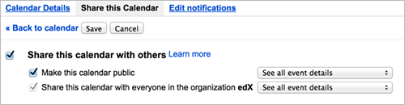

6.13. 谷歌日历工具¶
这章介绍了如何嵌入在你的课程中嵌入谷歌日历.需要更多信息,请看以下话题.
在你的课程中你也可以使用谷歌云文件，比如文档，幻灯片和图像.了解更多信息，请点击:ref:Google Drive Files Tool.
Note
谷歌的服务在一些国家和地区不可用。如果谷歌的服务在学习者所在的区域内不可用，这个学习者可能会在谷歌云文件或日历所在的地方看到“image unavailable”的提示.我们强烈建议在这些地方为学习者提供可替代的资源.

6.13.2. 在你的课程中嵌入谷歌日历¶
在你的课程中嵌入谷歌日历有以下三步.
- 通过使用 Studio在你的课程中嵌入谷歌日历 .
- 使你的谷歌日历共有并获得它的ID.
- 通过使用:ref:Studio<在edX Studio中添加谷歌日历组件>`或者:ref:`OLX<在OLX中添加谷歌日历XBlock>添加谷歌日历到你的课程中 .
6.13.2.1. 在你的课程中嵌入谷歌日历¶
你可以通过使用Studio或OLX在你的课程中嵌入谷歌日.
6.13.2.1.1. 通过edX Studio嵌入谷歌日历¶
要在你的课程中嵌入谷歌日历嵌入:
点击**设置**菜单, 选择**高级设置**.
在**高级模块列表**栏,在括号中间放入光标, 填上``”google-calendar”
.如果你在这个区域内看到了其他值,在最后的值后面添加一个逗号，然后在填入“google-calendar”``. 例如:在页面底部, 选组 保存更改.
6.13.2.1.2. 通过OLX嵌入谷歌日历¶
要在你的课程中嵌入谷歌日历, 你要编辑定义课程结构的XML文件. 你找到 课程 元素的 高级模板 属性, 然后添加字符 ``google-calendar``到里面.
比如, 下面的XML代码就是在你的课程里面嵌入谷歌日历.也可以通过它嵌入其他的谷歌文件.
<course advanced_modules="["google-document",
"google-calendar"]" display_name="Sample Course"
start="2014-01-01T00:00:00Z">
...
</course>
更多相关信息,请查看 The Courseware Structure.
6.13.2.2. 使你的谷歌日历公开并获得它的ID¶
在你添加你的谷歌日历到你的课程中之前，你必须使你的谷歌日历公开并且获得它的ID.
Important
这一节中描述的任务依赖第三方软件的使用。由于软件版本的改变,这里提供的步骤的目的是引导,而不是一个确切的过程。
6.13.2.2.1. 使你的谷歌日历公开¶
打开谷歌日历.
通过*Settings**菜单, 选择**Settings**.
选择**Calendars**标签.
你可能有了多个日历在日历选项卡上.找到您想要在你的课件中共享的日历。
在这个即将要被共享的日历的那行,找到**Sharing**那列,选择**Edit Settings**.
点击**Share this Calendar**标签, 然后选择**Make this calendar public**.

选择**Save**.
**Calendar Settings**页面就关闭了, 然后你回到**Calendars**标签. 继续:ref:o获得这个谷歌日历的ID<获得这个谷歌日历的ID>.
6.13.2.2.2. 获取谷歌日历ID¶
{kind=link}
6.13.2.3. 在课件中添加谷歌日历¶
要在课件中添加一个谷歌日历,你需要创建一个在Studio中创建一个高级组件或者在OLX中创建一个谷歌日历XBlock.
6.13.2.3.1. 通过edX Studio添加谷歌日历组件¶
在你添加谷歌日历之前请确保:ref:在你的课程中能够添加谷歌日历<在edX Studio能添加谷歌日历>.
要添加谷歌日历组件:
在**Course Outline**页面, 打开你想要添加谷歌日历组件的单元.
在**Add New Component**下面，点击**Advanced**,然后选择**Google Calendar**.
这个新组件就是把默认的谷歌日历嵌入到单元里.
在这个新组件里点击**Edit**.
在**Display Name**区域, 输入这个组件的名字.
在**Public Calendar ID**区域,把日历ID复制粘贴到里面去. `Obtain the Google Calendar ID`_ task.
在**Default View** 区域区域, 选择**Month**, Week, 或**Agenda**.
这是你学生看到的最初的视图。每个学生都可以改变成他 自己的视图.
选择 Save.
{kind=link}
{kind=link}
你可以点击:ref:课程内容预览 看看学生看到的单元里的谷歌日历是怎么的.
6.13.2.3.2. 通过OLX添加谷歌日历XBlock¶
要在OLX添加谷歌日历XBlock，并创建``google-calendar``元素.你可以在``vertical`` 中嵌入这个元素, 或者你也可以在它自己的文件的垂直引用中嵌入这个元素.更多相关信息请查看`The Courseware Structure`_.
示例:
<google-calendar url_name="4115e717366045eaae7764b2e1f25e4c"
calendar_id="abcdefghijklmnop1234567890@group.calendar.google.com"
default_view="1" display_name="Class Schedule"/>
``calendar_id`的值是你在`获取谷歌日历ID`_中复制的ID.
Note
edX学习管理系统可以设置谷歌日历高和宽. 如果你添加了这些属性,LMS会重载你的改变.
6.13.3. 编辑谷歌日历¶
当你对你嵌入在你的课程中的谷歌日历作出改变时,学生可以马上看到这些改变。在你更改日历与谷歌的用户界面后，你不需要在编辑谷歌日历组件。